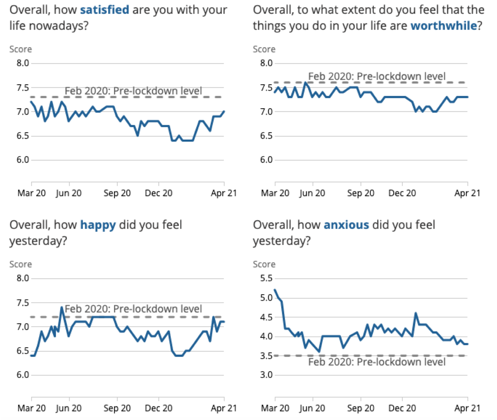

Wellbeing science has behaved very honourably during this pandemic in my opinion, particularly in the UK, where many of the best-known wellbeing researchers openly pointed to the disproportionate costs of lockdowns compared to their (dubious) benefits. Many stood up in newspaper articles and scientific publications (see also here and here) to be counted against the madness of UK lockdown policies (to no effect, but at least 'we' were not complicit bystanders). 'We' tried to warn about the disaster that was being inflicted, essentially because 'we' knew about the immense harm done when one keeps families and friends physically apart. Also, 'we' knew where to look for big negative effects of the disruptions, namely mental health, government debt, IVF treatments, and such.
Yet, how about the other direction: what have we learned about wellbeing from the statistics coming out during the pandemic? After all, it was a huge shock to many parts of the social system and should hence be a prime supplier of insights as to what matters and how things interrelate.
The figure below tells the essential story as it has emerged in several countries. The figure shows the behaviour of the "ONS4" wellbeing module during the pandemic in the UK from the Opinions and Lifestyle Survey, which has the advantage that it had a consistent methodology before and after March 2020 (ie it was an online survey already).

The top-left graph is the main wellbeing question on how individuals evaluate their own life. As we now know from many countries in Europe, the first lockdown in April-May was bad for wellbeing (a drop of around 0.3), but the second one in the winter (Sep-Mar) was way worse (o.8, which is over 10%). Now, this drop was predicted beforehand on the basis that social life was directly important for wellbeing and would be disrupted with distancing rules. So 'we' expected both an immediate drop, but also a very quick return to wellbeing normality if social distancing rules were lifted, as they were largely in the summer of 2020, and are starting to be lifted now. In this regard, the evidence is confirmatory: most of the wellbeing effect is temporary and very probably tied to social distancing rules. We saw that in Australia too: strong wellbeing effects during lockdowns, but not much afterwards, so for instance no social 'scarring'.So the first lesson is confirmatory: social relations seem to matter and can be disrupted by anti-social policy. Yet, social relations also come back very quickly when restrictions lift.
If we then turn to the bottom-right corner, we can look at what happened to anxiety, essentially sky-rocketing up at the start of the Fear in March 2020, returning almost to normality in the summer of 2020. It was then ramped up again by all the propaganda and such in the winter, but nowhere near the heights of March 2020 when the fear wave swept through the whole of the West, overcoming the many institutional barriers set against its victory. This, we knew already. What we can also deduce however is that wellbeing is not the mirror image of anxiety: life satisfaction dropped much more in the second wave than anxiety went up again. Rather, other factors matter and anxiety in March 2020 did not coincide with a large drop in life-sat. So the idea that wellbeing is driven by fear is clearly not the case: fear is a factor, but there have been much bigger factors at work. 'We' knew that already, but it is handy to have that too confirmed in the large movements associated with the pandemic.
Then the bottom-left one is about more hedonic measures of wellbeing, namely whether individuals felt happy yesterday. This measure also dropped during the lockdowns, but returned more quickly and more fully even before the full lifting of lockdowns. 'We' knew that this measure behaved this way from other data, such as bouts of unemployment, during which individuals over time also see their hedonic wellbeing return quickly, but they remain depressed and thus have low life-satisfaction. This is in step with what we see in the top-right corner, ie the question on whether people feel their life is worthwhile. It drops less strongly than life-satisfaction, but it also moves down with the lockdowns, and more strongly in the second lockdowns. It is thus indeed the 'meaning' part of life-satisfaction that is not picked up by hedonic wellbeing.
Hence the basic lesson is that the ONS4 behaved roughly as predicted. Even the interrelationships have been roughly in the way anticipated.
The only aspect one might say that was unexpected is that the wellbeing drop in the first lockdown was not as big as in the second lockdown, whilst the disruptive measures were similarly socially invasive. One can explain this by saying that the first lockdown had a 'let us all fight this together' element that made the social costs less bad, but that was not truly expected beforehand: looking at the enormous compliance with social distancing rules the first time round and what we saw from Australia, one would have predicted a roughly similar wellbeing drop first lockdown to the second lockdown. So a more careful in-depth look at various hypotheses is still called for when it comes to that discrepancy. There might be mental health scarring effects going on (ie, despair and deep loneliness), but it can also be the effect of economic factors like the realisation of inevitable economic ruination among particular groups.
Thanks, that's really interesting. I have few random commets:
"So a more careful in-depth look at various hypotheses is still called for when it comes to that discrepancy."
One possibility is that people's patience wears out, especially those not likely to be affected much (young groups). In this latter respect, there is pretty good historical evidence that people get sick of altruism over the longer term. You could look at the interaction with age to test that. A second possibility is that some people used up lots of their resources in round 1, and so round 2 basically the killer. You could look at different groups to test that (i.e., those not affected much vs. those affected more -- job class would work). That wouldn't be very hard to imagine for struggling businesses or people that used their savings in round 1.
"There might be mental health scarring effects going on (ie, despair and deep loneliness), but it can also be the effect of economic factors like the realisation of inevitable economic ruination among particular groups."
That would be really interesting too. This is culturally dependent, but in some places it is argued that some groups more or less already accept their hopeless position, and the outcome of this is less bad that groups that don't (poor blacks vs. poor whites in the US is a good example -- poor whites have worse effects of the same level of poverty than black Americans because they don't expect to be that way whereas blacks don't see it as so negative because they expect it could happed to them (I imagine new immigrants would also be more resistant to these effects). So you could test that too.
thanks, good suggestions, and agreed with your assertions on the black-white difference which we indeed see for other things too (like reaction to natural disasters). I think there is a good chance someone in the next 12 months will roughly do as you suggest.
On the age-profile, we know that the young (15-39) were the ones carrying nearly all of the observed wellbeing burden, with the school closures in the first lockdown hitting teenagers of disadvantaged groups particularly hard (this is also true in Victoria, but none of the important people seem to care what deliberate policy is doing to the young, as if they don't exist). There is even a slight puzzle there in that we don't clearly see a wellbeing drop among the very old, whilst many of them have been effectively imprisoned for nearly a year in care homes and such. One suspects they are not in any data: no-one is allowed to visit them and their internet presence in surveys must be minute.
hmm,
Big negative effects of lockdowns eh. It seems our resident wingnut still has no idea.
Mental illness. the only numbers we have here is suicides' and they di not rise in lockdowns.
Debt has increased. Well yes but if we took the extremely vague Fritjers proposal or simply di not have lockdowns then the economy still tanks not as much BUT for a much longer period.
IVF. Well this is related to how covid infections affect the health sector. Lockdowns certainly does not increase them and even our cultist admits they increase AFTER a lockdown ( Holy pregnancy Batman they do work and Fritjers admitted it).
no lockdown and the health sector explodes and those hoping for IVF have tow chances of getting that.
It does get boring hitting Fritjers out of the park every time he writes.
Paul, never a truer word spoken "...‘we’ knew where to look for big negative effects".
Some typos Paul:
" many of the best-known wellbeing [supply side liberal] researchers"
Paul, why did you referenced this, "And Paul Frijters is to be commended for an excellent discussion of this paper, " ...
And goes in to finish with...
"I honestly don’t know what the right policy is going forward. But unlike Paul Frijters, I don’t regret the lockdowns we have done so far as opposed to having done no relatively comprehensive lockdowns ..."
https://blog.supplysideliberal.com/post/2020/5/7/miles-kimballs-discussion-of-when-to-release-the-lockdown-a-wellbeing-framework-for-analysing-benefits-and-costs-by-layard-clark-de-neve-krekel-fancourt-hey-and-odonnell
Many "stood up" and said ... "and then compare the total of these with the increase in deaths that would result from an early exit" quoted from paper.
The happiness professor Paul Dolan's "work on COVID-19 has been featured recently in The Spectator, The Telegraph, The Irish Times and most recently at The Hay Festival." Spectatortacular. From his website.
PF says "...anxiety, essentially sky-rocketing up..." reminiscent of his next unhelpful psychobable term "the start of the Fear", which is of course taken from the movie "director Damien Odoul for his unfettered depictions of the true horrors seen and suffered by French soldiers from 1914 through 1918 in the trenches of World War I. " The Fear (2015 film) wikip.
Propaganda needs scare quotes too. Why wouldn't we call your polemics 'propaganda' Paul? From Wikipedia, "Propaganda is communication that is primarily used to influence an audience and further an agenda...". Correct. Please use quotes.
Missing quotes around we and a delusion " This, we knew already."
"large movements" definitely needs a ref cite qualification - or just put it in quotes please.
Correlation eh - just acceptance of "they remain depressed and thus have low life-satisfaction. This is in step with what we see in the top-right corner, ie the question on whether people feel their life is worthwhile.". How about suicides again? See links at end.
Excellent and apt descriptor "been roughly".
Paul, in your reply to Conrad you said "the very old, whilst many of them have been effectively imprisoned for nearly a year in care homes and such", which was your initial prescription, yet you now use it as a pejorative against the not 'we' tribe. Very disappointing.
+1 IamawanbTrapis " It does get boring hitting Fritjers out of the park every time he writes.".
Thanks.
"Why didn't suicides rise during Covid?
https://worksinprogress.co/issue/why-didnt-suicides-rise-during-covid/
https://www.marketwatch.com/story/we-shouldnt-be-complacent-suicide-deaths-fell-during-the-2020-pandemic-but-why-11617887838
https://www.vanityfair.com/style/2021/02/roxane-gay-on-how-to-write-about-trauma
https://abc.net.au/news/2021-04-24/tackling-australias-suicide-crisis-success-government-action/100091882
Paul, never a truer word spoken "...‘we’ knew where to look for big negative effects".
Some typos Paul:
" many of the best-known wellbeing [supply side liberal] researchers"
Paul, why did you referenced this, "And Paul Frijters is to be commended for an excellent discussion of this paper, " ...
And goes in to finish with...
"I honestly don’t know what the right policy is going forward. But unlike Paul Frijters, I don’t regret the lockdowns we have done so far as opposed to having done no relatively comprehensive lockdowns ..."
https://blog.supplysideliberal.com/post/2020/5/7/miles-kimballs-discussion-of-when-to-release-the-lockdown-a-wellbeing-framework-for-analysing-benefits-and-costs-by-layard-clark-de-neve-krekel-fancourt-hey-and-odonnell
Many "stood up" and said ... "and then compare the total of these with the increase in deaths that would result from an early exit" quoted from paper.
The happiness professor Paul Dolan's "work on COVID-19 has been featured recently in The Spectator, The Telegraph, The Irish Times and most recently at The Hay Festival." Spectatortacular. From his website.
PF says "...anxiety, essentially sky-rocketing up..." reminiscent of his next unhelpful psychobable term "the start of the Fear", which is of course taken from the movie "director Damien Odoul for his unfettered depictions of the true horrors seen and suffered by French soldiers from 1914 through 1918 in the trenches of World War I. " The Fear (2015 film) wikip.
Propaganda needs scare quotes too. Why wouldn't we call your polemics 'propaganda' Paul? From Wikipedia, "Propaganda is communication that is primarily used to influence an audience and further an agenda...". Correct. Please use quotes.
Missing quotes around we and a delusion " This, we knew already."
"large movements" definitely needs a ref cite qualification - or just put it in quotes please.
Correlation eh - just acceptance of "they remain depressed and thus have low life-satisfaction. This is in step with what we see in the top-right corner, ie the question on whether people feel their life is worthwhile.". How about suicides again? See links at end.
Excellent and apt descriptor "been roughly".
Paul, in your reply to Conrad you said "the very old, whilst many of them have been effectively imprisoned for nearly a year in care homes and such", which was your initial prescription, yet you now use it as a pejorative against the not 'we' tribe. Very disappointing.
+1 IamawanbTrapis " It does get boring hitting Fritjers out of the park every time he writes.".
Thanks.
"Why didn't suicides rise during Covid?
https://worksinprogress.co/issue/why-didnt-suicides-rise-during-covid/
https://www.marketwatch.com/story/we-shouldnt-be-complacent-suicide-deaths-fell-during-the-2020-pandemic-but-why-11617887838
https://www.vanityfair.com/style/2021/02/roxane-gay-on-how-to-write-about-trauma
https://abc.net.au/news/2021-04-24/tackling-australias-suicide-crisis-success-government-action/100091882
I see your selective reading and reporting skills are alive and well. There is a government propaganda job waiting for you somewhere.
The point of the link to the discussion by those Americans was not that they link to me or even agreed with me, but that they discussed a wellbeing covid paper by others (ie, not me). The fact that they also talk positively about a troppo post should make you feel good, not bad.
You should try reading what Paul Dolan has been writing about the lockdowns and scientific debate. Its good stuff, very much in line with what you read previously at troppo.
On suicides, you fall into the same trap as Homer, which is to presume I made predictions on that, which I have not. Indeed, in my Sweden vs Australia post of April 2021 I counted all negative excess deaths, so implicitly counted reduced suicides as a plus.
So essentially you display extreme laziness both in trying to see the point of the links and in presuming (rather than knowing) what my position was on suicides, drawing a crooked line from an unproven assumption to a foregone conclusion.
I would like to be able to say I expected better from you.
As expected, lockdowns, masks, vaxx passports are favoured by the collectivists (control) and disfavoured by the individualists (freedom). Nothing untoward or even interesting there. The somewhat frivolous idea of "well being, or wellness" is really just an opinion poll buttress, with poll questions designed to elicit answers for agendas. Whether I'm happy or not is, bluntly, no one else's business.
Far more cogently, why has the smug and mendacious Fauci now become a patsy ? Why has the DoJ decided to release that big swag of his emails under FOI now after sitting on them for over 12 months ? And most critically, which bio-research labs are still carrying out "gain of function" work on pathogens under loose security protocols with funding supplied through blandly hidden tax grants ?
[I do hope I'm not shadow banned here, although I'm not actually interested enough to look from some other computer].
If our resident wingnut had his way then lockdown in the UK which would have meant the NHS blowing up.
not hard to imagine both the economic and mental effects from such a stupid policy.
Homer
I went in to delete your last comment, but figured there was at least some content in it if you ignore the bile. Further most people are ignoring you now because your comments are so intemperate and — let's face it — they don't add much. So there's no great need to delete them.
But I'm just letting you know that if you find your comments deleted, chances are, they'll be deleted by me.
Frankly, you should show Paul more respect. He's adding some value — a lot of value — even if he's wrong. You're just hurling abuse.
Thanks Paul
Your reference to the effect of lockdowns is as usual blissfully unhedged in with qualifications about what the counterfactuals are.
I think you've offered us something in some post somewhere comparing UK and Swedish experiences under lockdown and no lockdown, but if you can point me to it, it would be appreciated. Even more if it's the other nordics compared with Sweden.
The other thing your post takes me to is something Chris and I have argued previously — that lockdowns may or may not be the best policy, but lockdowns imposed and then lifted prematurely or being undone by opening up borders before effective measures are in place for handling reinfections are obviously the worst policy. So I'd say your data is a powerful indictment of incompetently imposed lockdowns, something that has always been, kind of obvious.
Hi Ian,
yes, Fauci is turning out to be an unusual character, isn't he? Fingers in lots of pies and now, seemingly, caught lying under oath about his involvement in the weaponisation of viruses.
I do take wellbeing seriously and have done so for a long time. My PhD in 1999 was on the topic and I just brought out a big Handbook on the issue of how to do wellbeing policy-making. Yes, wellbeing research is largely based on asking people things in surveys. Much like elections are about asking people things.
really Nick,
Pray tell us what value there is given he is completely wrong on the UK.
Pay him more respect. He keeps on repeating the lie that lockdowns mean IVf treatment cannot be done.
so you tell is it covid crowding out all other activities or put it another way how does a lockdown increase covid.
Just to repeat what value is there is his writings.
I should add a little more.
Bile?
you made him a wingnut not me. blowing up the NHS is not stupid. Say it isn't so please.
All my comments do is show up the 'problems of the wingnuttery written here.
Whether people respond or not I do not really care.
Hi Homer
I'm afraid your irritating behaviour, and continual childishness when I asked you to tone it down got the better of me. I've banned you. If you'd like to come on Troppo and not make a pest of yourself let me know.
cheers,
Nicholas